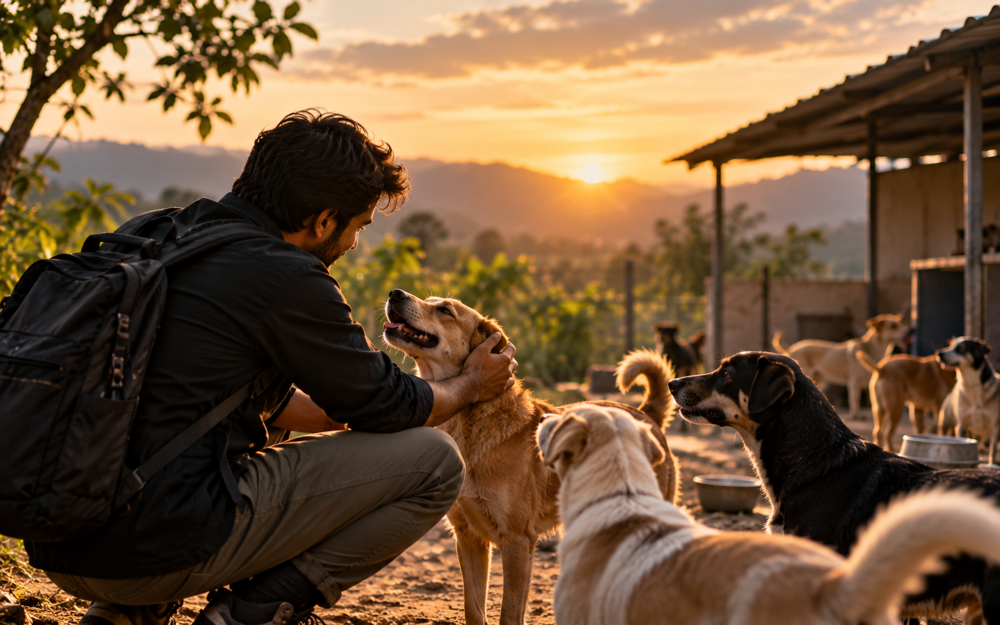
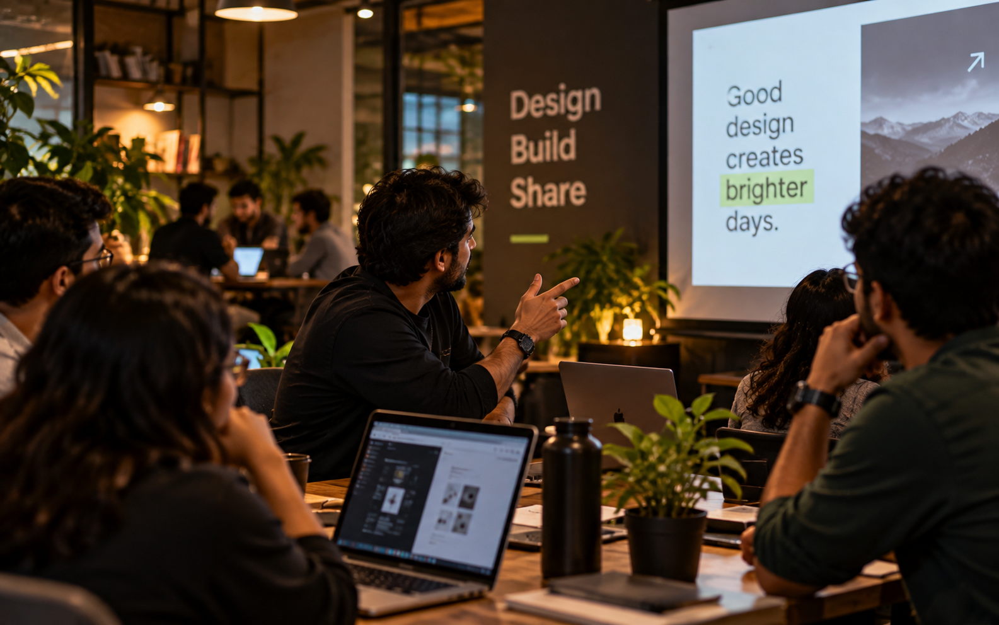

01 / Z-LINK
Z-One — Facility Management Platform
An enterprise platform concept covering facility data, condition assessments, project workflows, and reporting.
Read More ↗HELLO
Hari Krishna is a Senior UX/UI Designer with 6+ years of experience in end-to-end product design across B2B and SaaS industries. Based in India, I create impactful design solutions that connect user needs, business goals, and thoughtful design to create meaningful products.
SELECTED WORK
01 / Z-LINK
An enterprise platform concept covering facility data, condition assessments, project workflows, and reporting.
Read More ↗02 / LTIMINDTREE
A mobile product for surveying and field operations, designed in close collaboration with the client to support field measurements, positioning, and construction layout.
Read More ↗
TESTIMONIALS
Hari's keen eye for detail, deep understanding of user needs, has transformed our product experience. A true asset to any team.
Hari is an invaluable asset to our team. Their UX expertise, strategic thinking, and ability to balance user and business needs have significantly improved our product.
Hari is a dedicated UX designer with great attention to detail. His creative thinking and collaborative approach consistently contribute to excellent design outcomes.
BEYOND PIXELS AND PROTOTYPES
The experiences that keep me exploring, creating, learning, and connecting.
Riding · Travel · Photography
Sketching · Dancing

Animal Rescue · Volunteering

Design Meetups · Upskilling
Different experiences. One curious mind. ↗
LET'S CONNECT
Have a project in mind or an opportunity to discuss? I'd love to hear from you.